12Nov
12NovKeeping Your Dog Fresh Between Baths
How dry bath foam, sprays and powders fit into a simple weekly routine.
Read more → Wash & WhiskersPet grooming & hygiene · You are hereWash & WhiskersPet grooming & hygiene · You are here
Wash & WhiskersPet grooming & hygiene · You are hereWash & WhiskersPet grooming & hygiene · You are hereShampoos, dry baths, paw care, powders and home hygiene for dogs and cats, made to help your pets look, feel and live their best. Created by S Labs, every formula is paraben free, sulphate free and pH balanced, with natural extracts like neem, aloe vera and oatmeal.



Wash & Whiskers is a modern pet grooming and wellness brand dedicated to helping pets look, feel and live their best. Created by S Labs, the brand offers high-quality shampoos, conditioners and grooming sprays specially formulated for both dogs and cats.
From cleaning little paws after a walk to keeping coats fresh and surroundings clean, we make everyday pet care simpler, so you can spend more time doing what matters most: loving them.
Two ranges: grooming solutions that keep your pet fresh, clean and well cared for, and hygiene solutions for their paws, ears and home.
Complete coat care: cleanse, nourish and refresh, with targeted formulas for itch relief, ticks and fleas, whitening and de-shedding.
5-in-1 Shampoo & Conditioner · Itch Relief · Tick & Flea Repel · De-Shedding · Whitening
Fruit-inspired care enriched with nourishing, conditioning and soothing benefits for a hydrated, shiny coat.
Amla & Jamun · Alphonso Mango · Watermelon Cooler · Anar Glow · Tender Coconut · Green Apple & Pear
Everyday cleansing, coat freshness and targeted grooming made for cats.
All In One Cat Shampoo · Cat De-shedding Shampoo
A convenient, no-rinse foam that lifts everyday dirt and refreshes the coat between regular baths.
Repels Ticks & Fleas · Odour ControlRefreshes your pet's coat between baths with easy-to-use, waterless dry bath care.
Aloe Vera & Chamomile · Oatmeal & Vanilla
Nourishes and moisturises dry, rough paw pads to keep them soft and conditioned.
Shea Butter, Cocoa Butter & Beeswax · 50 g
Keeps pets fresh and comfortable between baths, with odour control and moisture management.
Anti Tick · Deodorant · Daily Fresh · Summer Cooling
Gentle cleansing for a fresh, clean coat and everyday pet hygiene.
Lavender Pet Soap · Tickoff Pet Soap
Cleans and refreshes kennels and living spaces, with a pet-safe odour neutraliser.
Blueberry · White Tea & Bamboo · Green Tea & Aloe Vera
Clean your pet's paws conveniently after walks and playtime with our waterless Paw Cleaner, available in two refreshing variants.
Baby Powder Fresh · Lavender
Gently cleans your pet's ears, helping remove everyday dirt, ear wax and build-up.
Neem Oil & Aloe Vera · 100 ml
Freshen pet beds, couches and living spaces with a convenient spray that helps manage everyday pet odours.
White Cotton & Cashmere
Guides your pet towards designated potty areas, making house training easier.
Citrus & Lemongrass
Helps neutralise pet urine odours from carpets and living spaces, keeping your home feeling fresh.
Lavender
Discourages unwanted chewing and licking on commonly targeted surfaces.
Indoor & Outdoor · 200 / 300 ml
Refreshes the coat between baths and manages odours without rinsing.
Aloe Vera & Chamomile
Pet odour remover for everyday floor cleaning in pet-friendly homes.
Eucalyptus & Lemongrass · 1 L
A bio-enzyme formula for beds, apparel, toys, towels and accessories.
Gentle Cleaning · 15 Sheets
Grooming and hygiene products for dogs, cats and the spaces they share.
 Dog
DogA gentle, all-in-one grooming solution that cleanses, soothes dry-feeling skin, detangles knots, brightens and conditions for a soft, smooth, manageable coat.
 Dog
DogGentle cleansing that helps soothe itchy-feeling skin while removing dirt and impurities, moisturising the skin and conditioning the coat.
 Dog
DogRepels ticks and fleas while gently cleansing, with Aloe Vera, Colloidal Oatmeal and Allantoin to care for the skin.
 Dog
DogConditions the coat, improves softness and manageability, and makes loose hair easier to remove during bathing.
 Dog
DogGently cleanses for a clean, bright-looking coat, enhancing softness, smoothness and natural-looking shine.
 Cat
CatGently cleanses away dirt, excess oil and everyday impurities without drying, leaving your cat's coat clean, smooth and naturally fresh.
 Cat
CatGently cleanses while helping loosen and remove excess loose hair, leaving the coat soft, smooth and more manageable.
 Dog & Cat
Dog & CatFruit-inspired care enriched with nourishing, conditioning and soothing benefits for a hydrated, shiny coat.
 Dog & Cat
Dog & CatFruit-inspired care enriched with nourishing, conditioning and soothing benefits for a hydrated, shiny coat.
 Dog & Cat
Dog & CatFruit-inspired care enriched with nourishing, conditioning and soothing benefits for a hydrated, shiny coat.
 Dog & Cat
Dog & CatFruit-inspired care enriched with nourishing, conditioning and soothing benefits for a hydrated, shiny coat.
 Dog & Cat
Dog & CatFruit-inspired care enriched with nourishing, conditioning and soothing benefits for a hydrated, shiny coat.
 Dog & Cat
Dog & CatFruit-inspired care enriched with nourishing, conditioning and soothing benefits for a hydrated, shiny coat.
 Dog & Cat
Dog & CatNo water needed. Helps remove dirt, excess oil, ticks and fleas, leaving the coat clean, fresh and pleasantly scented between baths.
 Dog & Cat
Dog & CatHelps remove dirt, excess oil and unwanted odour with gentle, nourishing care for a fresh, comfortable coat between baths.
 Dog & Cat
Dog & CatWaterless everyday cleaning that removes light dirt, excess oils and odour, leaving the coat soft, clean and fresh.
 Dog & Cat
Dog & CatFreshen up your pet more often without water: lifts light dirt and odour and lightly deodorises the coat.
 Dog & Cat
Dog & CatAbsorbs excess moisture, controls odour and supports routine tick and flea care for everyday grooming.
 Puppy & Kitten
Puppy & KittenA gentle daily freshening powder that neutralises odour and keeps the coat soft and clean, scented with Cotton Blossom.
 Dog & Cat
Dog & CatAbsorbs excess moisture and neutralises odours, keeping your pet's coat fresh, dry and comfortable between baths.
 Dog & Cat
Dog & CatKeeps your pet fresh, cool and comfortable in warm weather, managing moisture and odour with a soothing touch.
 Dog & Cat
Dog & CatGentle cleansing for a fresh, clean coat and everyday pet hygiene.
 Dog & Cat
Dog & CatEveryday cleansing soap that helps keep ticks and fleas away.
 Dog & Cat
Dog & CatA rich, nourishing cream that moisturises, softens and soothes dry paws, keeping them smooth and comfortable.
 Dog & Cat
Dog & CatQuick, convenient paw cleaning after walks and outdoor play: removes dirt and impurities, keeping paws clean and soft.
 Dog & Cat
Dog & CatQuick, convenient paw cleaning after walks and outdoor play, leaving paws clean, soft and pleasantly fresh.
 Dog
DogA gentle cleansing formula that helps remove everyday dirt, excess wax and build-up as part of regular ear hygiene.
 Puppy & Dog
Puppy & DogCreates a clear scent cue to guide your puppy or dog to a designated potty spot: pads, balconies or gardens.
 Dog & Cat
Dog & CatNeutralises unpleasant urine odours and refreshes floors, bedding, crates and other pet areas.
 Dog & Cat
Dog & CatNeutralises pet odours and refreshes bedding, crates and mats with a soft, cozy fragrance.
 Dog & Cat
Dog & CatA bitter-tasting formula that discourages chewing, licking and biting of furniture, shoes, cables and other items.
 Dog & Cat
Dog & CatA lightweight, no-rinse spray that refreshes the coat and keeps it soft, smooth and conditioned.
 Pet spaces
Pet spacesCleans kennels, crates, floors and washable pet spaces while neutralising unwanted odours.
 Pet spaces
Pet spacesCleans kennels, crates, floors and washable pet spaces while neutralising unwanted odours.
 Pet spaces
Pet spacesCleans kennels, crates, floors and washable pet spaces while neutralising unwanted odours.
 Pet spaces
Pet spacesPlant-powered floor cleaning that removes pet odours, safe for pets and family.
 Pet spaces
Pet spacesFor pet beds, apparel, toys, towels and accessories.
 Dogs & Cats
Dogs & CatsFrom bath time to between-bath freshness and a clean home, there is a Wash & Whiskers product for every step of your pet's day.
From bath time to between-bath freshness and a clean home, there is a Wash & Whiskers product for each step.

Bath time with a dog, cat or fruit shampoo matched to your pet's coat.

Dry bath foam, spray or powder keeps the coat fresh between baths.

Paw cleaner, paw cream and ear cleaner for the little details.

Kennel wash, floor cleaner and odour sprays for clean spaces.
Shampoos made without parabens, for gentle everyday use.
Mild cleansing that respects your pet's skin and coat.
Dry bath foam, sprays and paw cleaner for days without a bath.
Formulas made for both, including pet-safe home care.
Neem, aloe vera, oatmeal, chamomile and nourishing oils.
From S Labs Hygiene Care, Hyderabad: everyday care for healthier lives.
Our formulas combine botanicals, nourishing oils and gentle cleansers, and are free from parabens and sulphates.
Known for natural cleansing and protective properties.
Itch Relief & Tick Shampoos, Anti-Tick Powder, Paw & Ear CleanerSoothes and moisturises skin and coat.
Used across shampoos, powders, sprays and cleanersGentle care for dry-feeling, sensitive skin.
5-in-1, Itch Relief, Cat Shampoos, Dry Bath SprayA calming, soothing botanical.
Dry Bath Spray & Foam, Anti-Tick Powder, Ear CleanerConditions for a smoother, shinier coat.
5-in-1, De-Shedding & Whitening ShampoosNourishing oils for softness and manageability.
5-in-1 & De-Shedding Shampoos, Paw CreamRich moisture for dry, rough paw pads.
Paw Cream with Beeswax & Vitamin EFresh, natural odour care.
Deodorant & Summer Cooling PowdersTraditional ingredient for fresh, clean care.
Dry Bath Foaming Shampoo: Odour ControlA light, calming fragrance.
Paw Cleaner, Urine Odour Neutraliser, Lavender Pet SoapNourishes and conditions the coat.
Cat De-Shedding ShampooFresh citrus scent cues and freshness.
Potty Training Spray, Floor Cleaner, Chew Stopper
S Labs is a consumer innovation company creating purposeful, effective and accessible brands across everyday pet care and home care. We combine consumer insight, product innovation, quality and modern brand building to solve real everyday needs.
We begin with the consumer, not the product.
Everyday care for healthier lives. Through our growing portfolio of consumer brands, we combine thoughtful product development with a commitment to quality, convenience and care. Our promise: cleaner homes, happier pets and healthier everyday living.
We turn real frustrations and unmet needs into differentiated products and brands. Our ambition: a portfolio of trusted, category-defining brands that make everyday living better.
Everyday categories deserve better innovation.
Safety should not require compromising on effectiveness.
Accessible products do not have to feel ordinary.
Consumers increasingly buy complete solutions and experiences, not simply products.
Good products should be intuitive and easy to understand.
Brand building should begin with solving a real problem.
Indian consumers deserve global quality products designed around Indian realities.
The smallest everyday frustration can reveal the biggest opportunity.
We start with people, not products: finding everyday frustrations in Indian pet and home care, then rethinking formulations, testing for safety and shaping the experience around real consumer feedback.
We study consumer behaviours, frustrations and emerging lifestyle changes.
We uncover unmet needs and underserved opportunities in everyday categories.
We turn observations into meaningful consumer insights.
We rethink formulations, formats, functionality and product experiences.
Consumer needs are translated into differentiated products.
Ideas and products evolve through experimentation and consumer feedback.
Functional innovation becomes a proposition consumers understand, desire and trust.
Brands are built across retail, digital and consumer touchpoints.
Data, feedback and market behaviour help us continuously improve.
Strong products become enduring consumer brands.
Our brands may solve different problems, but they are built around the same belief: find the gap, understand the consumer, and build something meaningfully better.
Pet grooming & hygiene for dogs and cats
You are hereHerbal repellent & home care products


 Partner With Us
Partner With Us
Enquiries about our brands, partnerships, distribution or business opportunities, or want to work with S Labs? We'd love to hear from you.
Get in Touch ↗12NovHow dry bath foam, sprays and powders fit into a simple weekly routine.
Read more →05NovA quick after-walk routine with Paw Cleaner, and Paw Cream for dry pads.
Read more →28OctAll In One or De-shedding? How to pick the right shampoo for your cat's coat.
Read more →